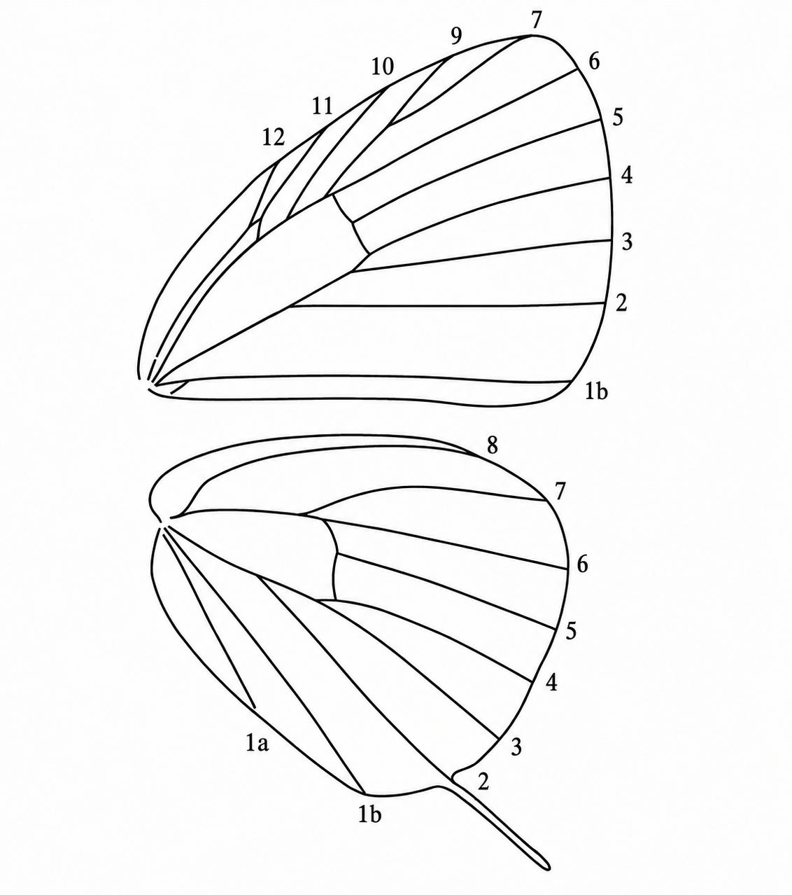
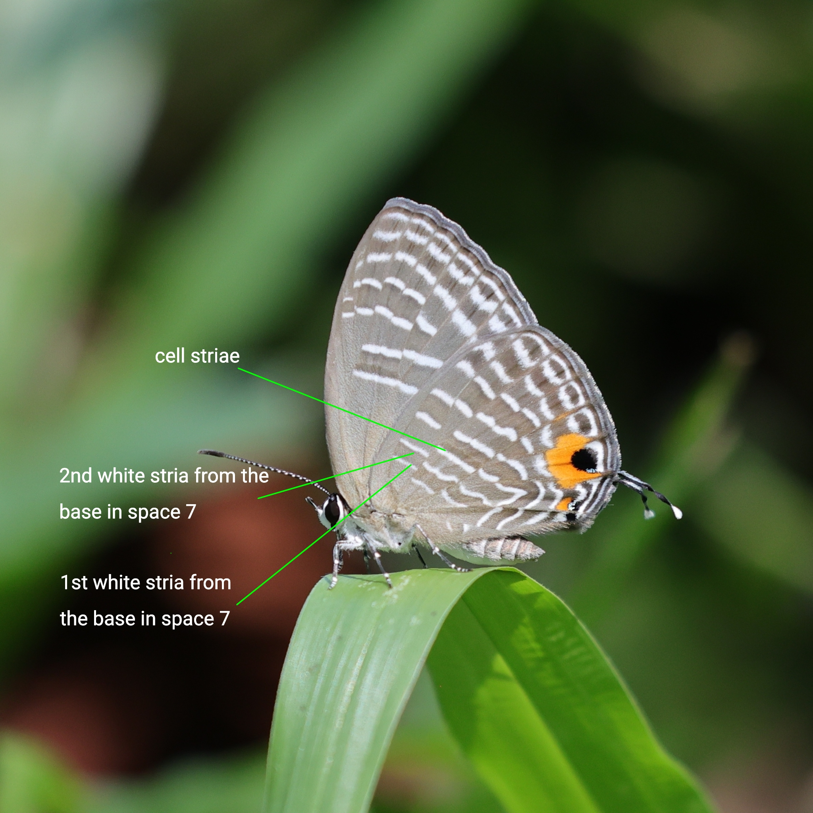
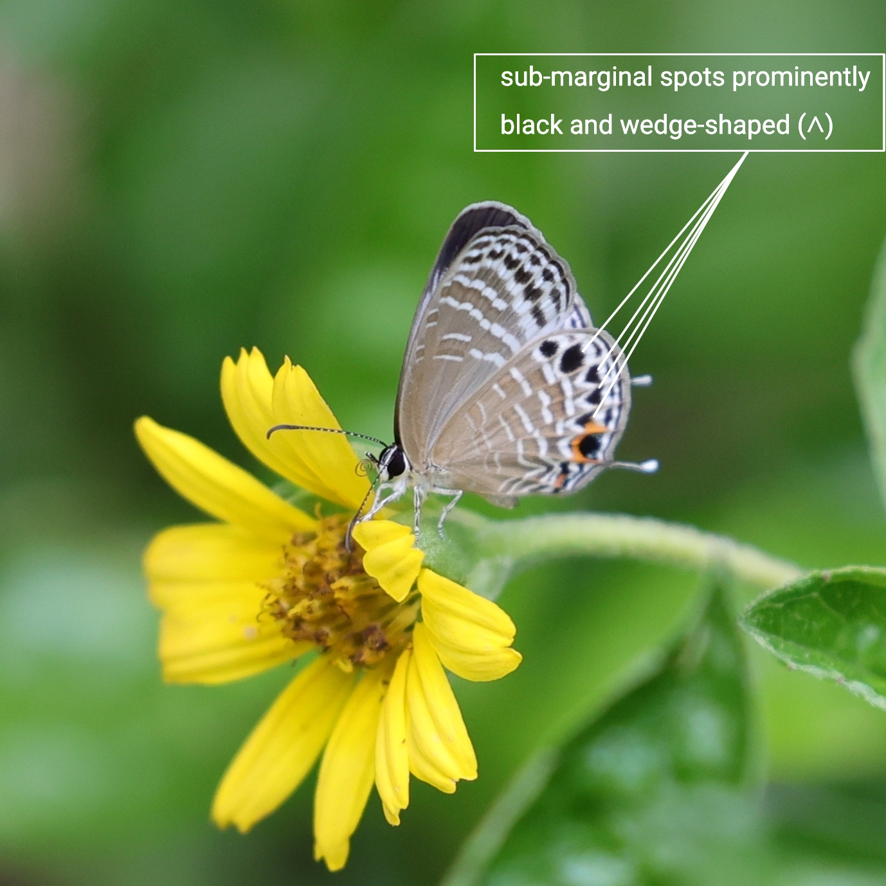
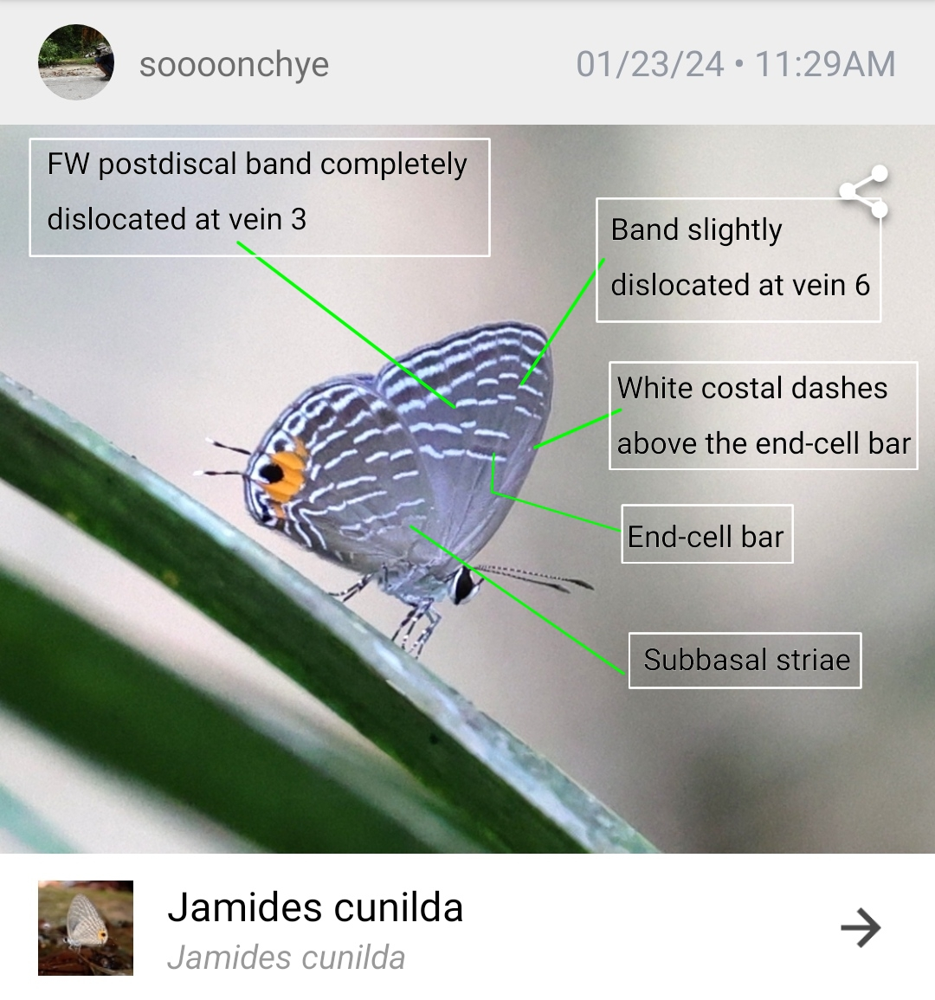
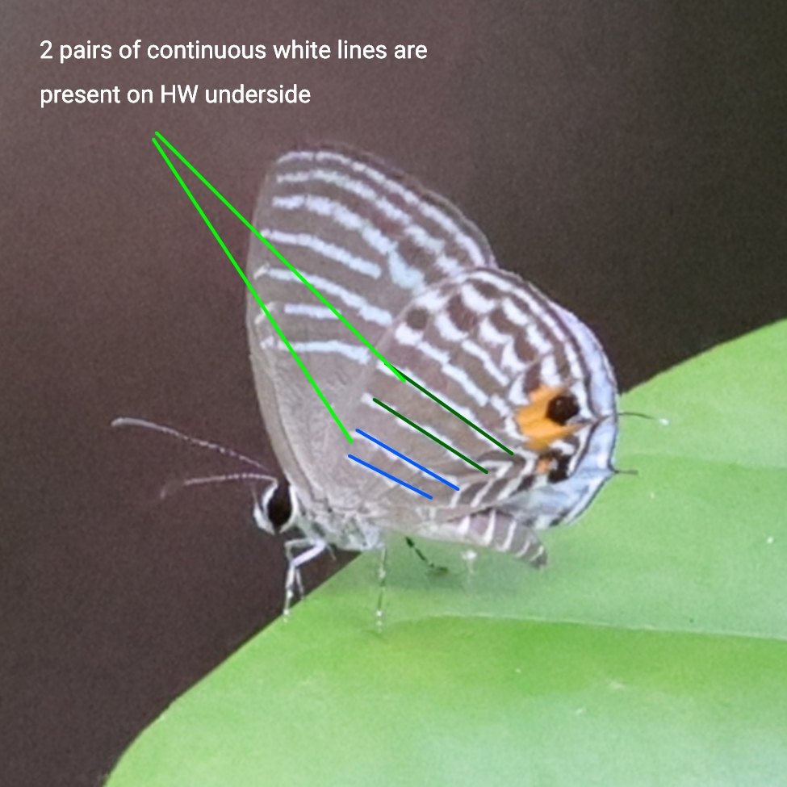

Where to start
Open Feature Scoring with your photo. Mark only the features you can clearly see — candidates are ranked in real time. Leave anything unclear blank; unanswered questions do not penalise any candidate.
Know these terms before you score
Photo tip: the forewing base is usually hidden under the hindwing in resting shots — skip any feature that isn't clearly visible. A sharp underside photo with the hindwing fully in view is enough to score most questions.
Open Feature Scoring →Reference diagrams for wing space numbering, morphological features, and structural landmarks used in the scoring questions.
Wing regions — underside anatomy
Before looking at individual spots, it helps to know the named regions of the wing. The diagram below shows the forewing (top) and hindwing (bottom) divided into the zones whose names appear throughout the identification literature.

The forewing (top) is divided into the Basal area near the wing base, the Post-Discal zone where most identification spots sit, and the Apex at the tip — the outer margin running between apex and tornus is the Termen. The hindwing (bottom) adds a Sub-marginal band between the postdiscal row and the termen, and the Tornal area at the anal angle — the lobe here and the tail at its tip are structural characters.
Wing spaces (venation)
Each area between two adjacent veins on the wing is called a space (also written as "cell" in some literature). Spaces are numbered from the inner margin outward. The key questions refer to spots and markings by their space number — for example, "postdiscal spot in space 6" means the spot in the sixth space of the hindwing.

Forewing (upper): spaces 1b, 2–7, 9–12 along the inner margin and costa (space 8 is absent).
Hindwing (lower): spaces 1a, 1b along the dorsum; spaces 2–8 extending to the costa. Space 2 bears the tail in tailed species.
Hindwing space 7: striae vs. cell striae
To separate Jamides elpis from J. caeruleus / J. ferrari, compare the position of the 2nd white stria from the base in HW space 7 against the nearest pair of cell striae (the white striae inside the discal cell, near the wing base).

The cell striae are the white lines inside the discal cell, near the wing base. The 1st and 2nd white striae from the base in space 7 lie just outside the cell, in the space below the costa. In J. elpis, the 2nd stria in space 7 sits about midway between the 2nd and 3rd cell striae; in J. caeruleus and J. ferrari, it lies in line with or closer to the 3rd (outer) cell stria.
Hindwing submarginal wedge-shaped spots (∧)
In Jamides aratus and Jamides philatus, the spaces between the inner and outer submarginal striae on the hindwing underside contain a row of prominent black, wedge-shaped (∧) spots — clearly distinct from the faint or rounded submarginal markings seen in other Malaysian Jamides.

Each spot sits between the inner and outer submarginal striae and is sharply pointed like a "∧" — much bolder than the faint shading or rounded spots found in other species.
Forewing band dislocation, costal dashes & subbasal striae
This annotated photo of Jamides cunilda shows several landmarks used together in the elpis-subgroup questions: where the forewing postdiscal band breaks at veins 3 and 6, the white costal dashes and end-cell bar near the forewing costa, and the hindwing subbasal striae near the wing base.

The forewing postdiscal band is shifted basad (inward) where it crosses vein 3 — a complete dislocation — and shifted slightly basad again at vein 6. Above the end-cell bar, a pair of white costal dashes sits near the forewing costa. Near the wing base, the hindwing shows its subbasal striae.
Hindwing underside: pairs of continuous white lines
In the celeno subgroup, J. malaccanus and J. parasaturatus have two pairs of continuous white lines on the HW underside — a subbasal pair and a discal pair — while J. celeno, J. pura, and J. zebra have only one (subbasal) pair.

Each pair runs as an unbroken double line across the hindwing. Species with only one pair lack the inner (discal) pair shown here closer to the wing base.